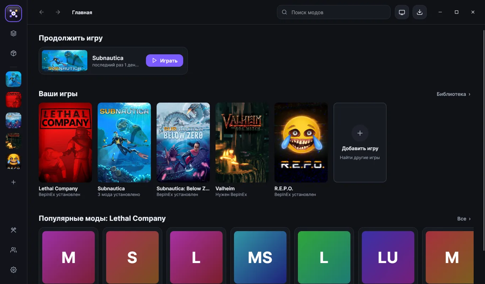

Установка в один клик
Нажали «Установить» — ModLaunch сам поставит BepInEx, SMAPI или Modding API, скачает мод со всеми зависимостями и положит его куда нужно. Моды с Thunderstore, Nexus, ModLinks и ModLaunch Hub — в одном каталоге.
ModLaunch сам находит игры, ставит загрузчик, подтягивает зависимости и следит за обновлениями. Библиотека с настоящими обложками, режим Big Picture для геймпада, ModLaunch Hub без рекламы и свой язык модов ModScript.

Загрузчик ставится сам, моды — из всех каталогов сразу. Нет вашей игры? Кнопка «+» найдёт её на диске и подберёт моды.
Без ручного копирования файлов, распаковки архивов и поиска, почему игра не запускается.
Нажали «Установить» — ModLaunch сам поставит BepInEx, SMAPI или Modding API, скачает мод со всеми зависимостями и положит его куда нужно. Моды с Thunderstore, Nexus, ModLinks и ModLaunch Hub — в одном каталоге.
«Хлебные крошки» в шапке, правая панель со сведениями об игре и моде, свечение в цвет игры, большая карусель «Выбор ModLaunch», «Топ модов» и каталог списком или сеткой, как в Modrinth.
Избранное и свои коллекции, сортировка по времени в игре, скрытие игр и меню по правой кнопке на обложке.
F11 — и ModLaunch на весь экран, как Steam на телевизоре: крупные обложки, арт игры на фоне, запуск, моды и выключение компьютера с геймпада. Кнопка View превращает геймпад в мышь и клавиатуру: стик — курсор, A — клик, X — экранная клавиатура.
Настоящие обложки всех 17 игр — даже без интернета. Ваши игры сверху, остальные ниже. У каждой игры шапка с артом и логотипом.
Вкладки мода: файлы, изменения, требования, картинки, видео, отзывы и статистика. Сортировки «случайные» и «по названию», период и 18+.
Обновления, отслеживаемые, избранное, недавно просмотренные, история загрузок и скрытое — на одной странице.
Своя площадка модов без рекламы и платного «быстрого скачивания»: версии со списком изменений, лайки, комментарии, отслеживание, проверка файлов по SHA-256 и VirusTotal.
ModScript: переменные, циклы, условия. Скрипт собирается в пакет Content Patcher или Thunderstore.
Кнопка «+» находит игры Steam, Epic и GOG, узнаёт движок и сама ставит BepInEx в игры на Unity.
Все версии мода со списком изменений. Поставьте любую — или откатитесь, если новая сломала игру.
«Отслеживать» у любого мода — колокольчик сообщит о новой версии. Плюс «Ещё от автора» и скрытие модов.
Кто из друзей во что играет. В игре — Ctrl+Shift+M: таймер, заметки, копия сохранений.
Шейдеры и пресеты — одной кнопкой. DXVK убирает фризы в старых играх.
Наборы модов для разных прохождений, копии сохранений, конфликты файлов и архив загрузок.
Тёмная, чёрная OLED и светлая темы, цвет акцента, масштаб, что показывать — и быстрый переход по Ctrl+P.
ModLaunch скачивает свои обновления, сверяет контрольную сумму и ставит их по одной кнопке.
Свежие моды из ModLaunch Hub. Каждый ставится в программе одной кнопкой, а здесь его можно посмотреть и скачать.
ModScript — язык модов ModLaunch. Одна команда на строку, понятные слова, ошибки видны прямо при наборе. Скрипт собирается в настоящий мод.
| ModLaunch | Vortex | r2modman | |
|---|---|---|---|
| Моды Thunderstore в один клик | ✓ | — | ✓ |
| Моды Nexus Mods | ✓ | ✓ | — |
| Несколько каталогов у одной игры | ✓ | — | — |
| Своя площадка модов без рекламы | ✓ | — | — |
| Свой язык модов и публикация из программы | ✓ | — | — |
| Друзья и оверлей в игре | ✓ | — | — |
| ReShade и DXVK одной кнопкой | ✓ | — | — |
| Профили, откат версий, конфликты файлов | ✓ | ✓ | частично |
| Big Picture и управление ПК геймпадом | ✓ | — | — |
| Бесплатно, без подписок | ✓ | ✓ | ✓ |
Один файл, около 25 МБ.
«Установить» — и ModLaunch на рабочем столе.
Игры найдутся сами. Выберите мод и нажмите «Играть».
Да, полностью. Без подписок, рекламы и платных функций.
Так Windows пишет про любые программы без платной цифровой подписи. Нажмите «Подробнее» → «Выполнить в любом случае». Исходный код открыт на GitHub, а установщик собирается там же автоматически и перед выпуском проходит самопроверку.
С сайтов, где их выкладывают авторы: Thunderstore, Nexus Mods и ModLinks — ModLaunch скачивает оригинал. И из ModLaunch Hub, куда авторы публикуют моды прямо из программы.
Каждый файл сверяется по SHA-256 при скачивании, на странице мода есть отчёт VirusTotal по хэшу, а на плохой мод можно пожаловаться. Моды-скрипты на ModScript вообще не содержат программного кода — только данные и настройки.
Нет. Аккаунт ModLaunch нужен только для публикации в Hub, комментариев, друзей и отзывов — всё остальное работает без него.
Нажмите «+» в программе: ModLaunch найдёт игру на диске, узнает движок и подберёт каталог модов. Или напишите в Issues на GitHub, какую игру встроить следующей.
Простой язык модов ModLaunch: одна команда на строку. Из скрипта получается настоящий мод — пакет Content Patcher для Stardew Valley или пакет Thunderstore для игр на BepInEx. Попробовать можно прямо на сайте.